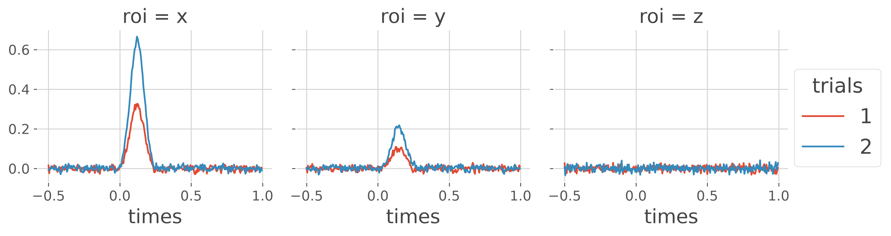
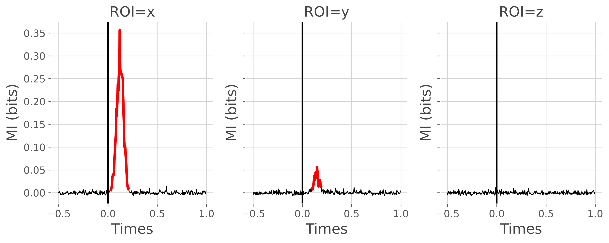
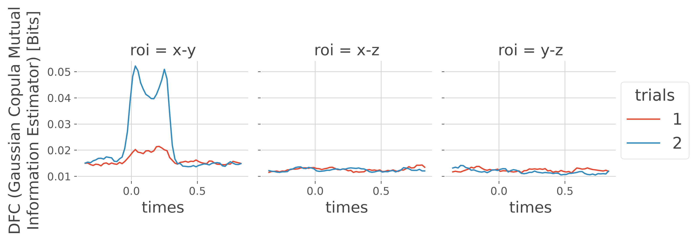
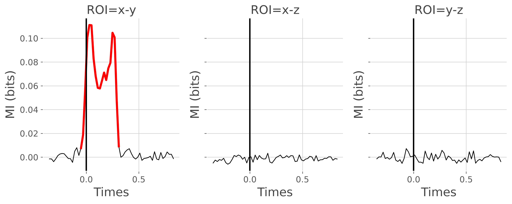
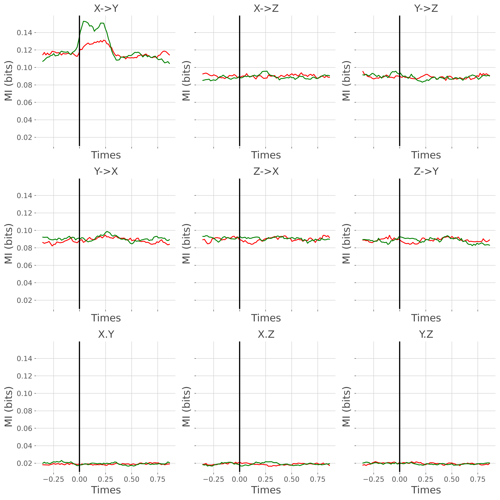
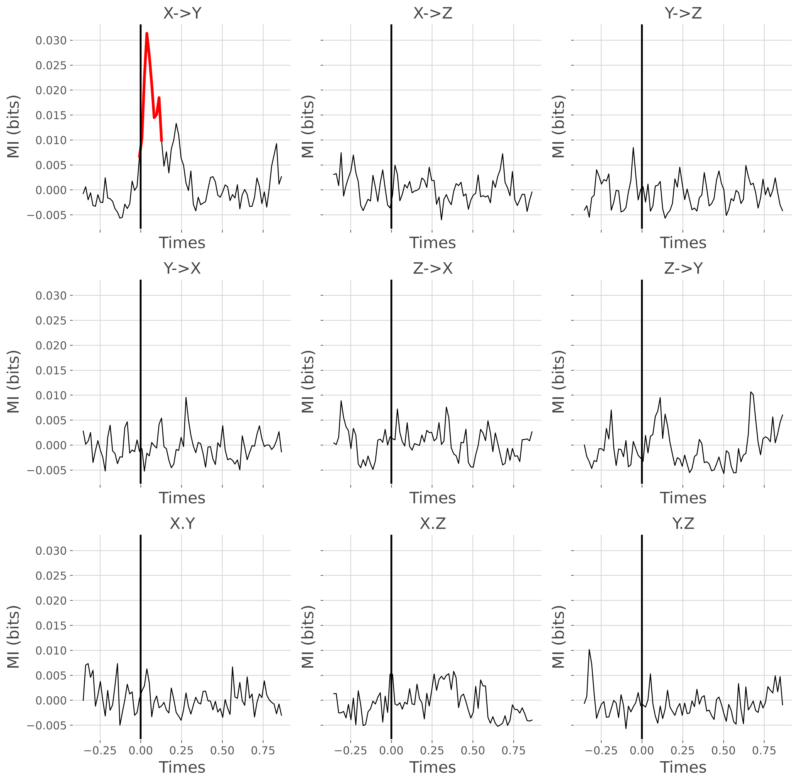

Note
Go to the end to download the full example code.
Statistical analysis of a stimulus-specific network#
In this tutorial we illustrate how to analyze a stimulus-specific network i.e first if the nodes of the network present an activity that is modulated according to a stimulus (for example two conditions) and second, if the connectivity strength (i.e the links between the nodes) is also modulated by the stimulus.
import numpy as np
import xarray as xr
from frites.simulations import StimSpecAR
from frites.dataset import DatasetEphy
from frites.workflow import WfMi
from frites.conn import conn_dfc, define_windows, conn_covgc
from frites import set_mpl_style
import matplotlib.pyplot as plt
set_mpl_style()
Simulate a stimulus-specific network#
First, lets simulate a three nodes network using an autoregressive model. In this three nodes network, the simulated high-gamma activity of nodes X and Y are going to be modulated by the stimulus, such as the information sent from X->Y
"""
Properties of the network :
* ar_type = type of the model. Here, we use 'hga' which simulate a two
nodes network (X->Y) of high-gamma activity
* n_subjects = number of subjects to simulate
* n_stim = number of categories (e.g each category could correspond to an
experimental condition)
* n_epochs = number of trials / epochs in each condition
* n_std = control the number of standard deviation the true signal is
exceeding the noise (SNR)
"""
ar_type = 'hga'
n_subjects = 5
n_stim = 2
n_epochs = 100
n_std = 1
ss_obj = StimSpecAR()
# generate the data
x = []
for n_s in range(n_subjects):
# generate nodes x and y
_x = ss_obj.fit(ar_type=ar_type, n_epochs=n_epochs, n_stim=n_stim,
n_std=n_std, random_state=n_s)
trials, times = _x['trials'].data, _x['times'].data
# generate pure noise node z
rnd = np.random.RandomState(n_s)
_z = rnd.uniform(-.5, .5, (len(trials), 1, len(times)))
_z = xr.DataArray(_z, dims=('trials', 'roi', 'times'),
coords=(trials, np.array(['z']), times))
# concatenate the three nodes
_x = xr.concat((_x, _z), 'roi')
x += [_x]
# get times and roi
times = _x['times'].data
roi = _x['roi'].data
Plot the mean activity per node and per condition. The activity is concatenated across subjects.

Stimulus-specificity of the nodes of the network#
In order to determine if the activity of each node is modulated according to the stimulus, we then compute the mutual information between the high-gamma and the stimulus variable.
0%| | Estimating MI : 0/3 [00:00<?, ?it/s]
33%|███▎ | Estimating MI : 1/3 [00:00<00:01, 1.46it/s]
67%|██████▋ | Estimating MI : 2/3 [00:01<00:00, 1.46it/s]
100%|██████████| Estimating MI : 3/3 [00:02<00:00, 1.47it/s]
100%|██████████| Estimating MI : 3/3 [00:02<00:00, 1.47it/s]
define the MI plotting function
def plot_mi(mi, pv):
# figure definition
n_subs = len(mi['roi'].data)
space_single_sub = 4
fig, gs = plt.subplots(1, 3, sharex='all', sharey='all',
figsize=(n_subs * space_single_sub, 4))
for n_r, r in enumerate(mi['roi'].data):
# select mi and p-values for a single roi
mi_r, pv_r = mi.sel(roi=r), pv.sel(roi=r)
# set to nan when it's not significant
mi_r_s = mi_r.copy()
mi_r_s[pv_r >= .05] = np.nan
# significant = red; non-significant = black
plt.sca(gs[n_r])
plt.plot(mi['times'].data, mi_r, lw=1, color='k')
plt.plot(mi['times'].data, mi_r_s, lw=3, color='red')
plt.xlabel('Times'), plt.ylabel('MI (bits)')
plt.title(f"ROI={r}")
plt.axvline(0, lw=2, color='k')
return plt.gcf()
plot the mi
plot_mi(mi, pv)
plt.show()

Stimulus-specificity of the undirected connectivity#
From the figure above, nodes X and Y present an activity that is modulated according to the stimulus, but not Z. The next question we can ask is whether the connectivity strength is also modulated by the stimulus. To this end, we are going to compute the undirected Dynamic Functional Connectivity (DFC) which is simply defined as the information shared between two nodes inside sliding windows. Hence, here, the DFC is computed for each trial inside consecutive windows
# define the sliding windows
slwin_len = .3 # 100ms window length
slwin_step = .02 # 80ms between consecutive windows
win_sample = define_windows(times, slwin_len=slwin_len,
slwin_step=slwin_step)[0]
# compute the DFC for each subject
dfc = []
for n_s in range(n_subjects):
_dfc = conn_dfc(x[n_s].data, win_sample, times=times, roi=roi,
verbose=False)
# reset trials dimension
_dfc['trials'] = x[n_s]['trials'].data
dfc += [_dfc]
now we can plot the dfc by concatenating all of the subjects

as shown in the figure above, the undirected connectivity between node X and Y is modulated according to the stimulus. But we can test still using the workflow of mutual information
ds_dfc = DatasetEphy(dfc, y='trials', times='times', roi='roi')
wf_dfc = WfMi(mi_type='cd', inference='rfx')
mi_dfc, pv_dfc = wf_dfc.fit(ds_dfc, n_perm=200, n_jobs=1, random_state=0)
# finally, plot the DFC
plot_mi(mi_dfc, pv_dfc)
plt.show()

0%| | Estimating MI : 0/3 [00:00<?, ?it/s]
33%|███▎ | Estimating MI : 1/3 [00:00<00:00, 3.42it/s]
67%|██████▋ | Estimating MI : 2/3 [00:00<00:00, 3.41it/s]
100%|██████████| Estimating MI : 3/3 [00:00<00:00, 3.46it/s]
100%|██████████| Estimating MI : 3/3 [00:00<00:00, 3.46it/s]
Stimulus-specificity of the directed connectivity#
The final point of this tutorial is to try to compute the directed connectivity and perform the stats on it to see whether the information is sent from one region to another (which should be X->Y)
# covgc settings
dt = 50
lag = 5
step = 3
t0 = np.arange(lag, len(times) - dt, step)
# compute the covgc for each subject
gc = []
for n_s in range(n_subjects):
_gc = conn_covgc(x[n_s], roi='roi', times='times', dt=dt, lag=lag, t0=t0,
n_jobs=1)
gc += [_gc]
gc_times, gc_roi = _gc['times'].data, _gc['roi'].data
# plot the mean covgc across subjects
gc_suj = xr.concat(gc, 'trials').groupby('trials').mean('trials')
fig, gs = plt.subplots(3, 3, sharex='all', sharey='all',
figsize=(12, 12))
for n_d, direction in enumerate(['x->y', 'y->x', 'x.y']):
for n_r, r in enumerate(gc_roi):
gc_dir_r = gc_suj.sel(direction=direction, roi=r)
plt.sca(gs[n_d, n_r])
plt.plot(gc_times, gc_dir_r.sel(trials=1), color='red')
plt.plot(gc_times, gc_dir_r.sel(trials=2), color='green')
plt.xlabel('Times'), plt.ylabel('MI (bits)')
if direction == 'x->y':
tit = f"{r[0].upper()}->{r[-1].upper()}"
elif direction == 'y->x':
tit = f"{r[-1].upper()}->{r[0].upper()}"
elif direction == 'x.y':
tit = f"{r[0].upper()}.{r[-1].upper()}"
plt.title(tit)
plt.axvline(0, lw=2, color='k')
plt.tight_layout()
plt.show()

Y, X->Z, Y->Z, Y->X, Z->X, Z->Y, X.Y, X.Z, Y.Z" class = "sphx-glr-single-img"/> 0%| | : 0/3 [00:00<?, ?it/s]
33%|███▎ | : 1/3 [00:03<00:06, 3.26s/it]
67%|██████▋ | : 2/3 [00:06<00:03, 3.26s/it]
100%|██████████| : 3/3 [00:09<00:00, 3.26s/it]
100%|██████████| : 3/3 [00:09<00:00, 3.26s/it]
0%| | : 0/3 [00:00<?, ?it/s]
33%|███▎ | : 1/3 [00:03<00:06, 3.24s/it]
67%|██████▋ | : 2/3 [00:06<00:03, 3.24s/it]
100%|██████████| : 3/3 [00:09<00:00, 3.24s/it]
100%|██████████| : 3/3 [00:09<00:00, 3.24s/it]
0%| | : 0/3 [00:00<?, ?it/s]
33%|███▎ | : 1/3 [00:03<00:06, 3.24s/it]
67%|██████▋ | : 2/3 [00:06<00:03, 3.24s/it]
100%|██████████| : 3/3 [00:09<00:00, 3.24s/it]
100%|██████████| : 3/3 [00:09<00:00, 3.24s/it]
0%| | : 0/3 [00:00<?, ?it/s]
33%|███▎ | : 1/3 [00:03<00:06, 3.25s/it]
67%|██████▋ | : 2/3 [00:06<00:03, 3.25s/it]
100%|██████████| : 3/3 [00:09<00:00, 3.25s/it]
100%|██████████| : 3/3 [00:09<00:00, 3.25s/it]
0%| | : 0/3 [00:00<?, ?it/s]
33%|███▎ | : 1/3 [00:03<00:06, 3.24s/it]
67%|██████▋ | : 2/3 [00:06<00:03, 3.24s/it]
100%|██████████| : 3/3 [00:09<00:00, 3.25s/it]
100%|██████████| : 3/3 [00:09<00:00, 3.25s/it]
finally, we can can compute the MI between the covgc (i.e for each direction) and the stimulus
mi_gc, pv_gc = {}, {}
for direction in ['x->y', 'y->x', 'x.y']:
# build the dataset for a single direction
gc_dir = [k.sel(direction=direction).squeeze() for k in gc]
# define an electrophysiological dataset
ds_gc = DatasetEphy(gc_dir, y='trials', roi='roi', times='times')
# compute and store the MI and p-values
wf_gc = WfMi(mi_type='cd', inference='rfx')
_mi_gc, _pv_gc = wf_gc.fit(ds_gc, n_perm=200, n_jobs=1, random_state=0)
mi_gc[direction] = _mi_gc
pv_gc[direction] = _pv_gc
# convert the mi and p-values to a DataArray
mi_gc = xr.Dataset(mi_gc).to_array('direction')
pv_gc = xr.Dataset(pv_gc).to_array('direction')
0%| | Estimating MI : 0/3 [00:00<?, ?it/s]
33%|███▎ | Estimating MI : 1/3 [00:00<00:00, 2.93it/s]
67%|██████▋ | Estimating MI : 2/3 [00:00<00:00, 2.93it/s]
100%|██████████| Estimating MI : 3/3 [00:01<00:00, 2.97it/s]
100%|██████████| Estimating MI : 3/3 [00:01<00:00, 2.97it/s]
0%| | Estimating MI : 0/3 [00:00<?, ?it/s]
33%|███▎ | Estimating MI : 1/3 [00:00<00:00, 3.09it/s]
67%|██████▋ | Estimating MI : 2/3 [00:00<00:00, 3.10it/s]
100%|██████████| Estimating MI : 3/3 [00:00<00:00, 3.05it/s]
100%|██████████| Estimating MI : 3/3 [00:00<00:00, 3.05it/s]
0%| | Estimating MI : 0/3 [00:00<?, ?it/s]
33%|███▎ | Estimating MI : 1/3 [00:00<00:00, 3.07it/s]
67%|██████▋ | Estimating MI : 2/3 [00:00<00:00, 3.03it/s]
100%|██████████| Estimating MI : 3/3 [00:00<00:00, 3.03it/s]
100%|██████████| Estimating MI : 3/3 [00:00<00:00, 3.03it/s]
plot the result
# sphinx_gallery_thumbnail_number = 6
fig, gs = plt.subplots(3, 3, sharex='all', sharey='all', figsize=(12, 12))
for n_d, direction in enumerate(['x->y', 'y->x', 'x.y']):
for n_r, r in enumerate(gc_roi):
# select mi and p-values computed on covgc
mi_gc_dir_r = mi_gc.sel(direction=direction, roi=r)
pv_gc_dir_r = pv_gc.sel(direction=direction, roi=r)
# set to nan non-significant values
mi_gc_s = mi_gc_dir_r.copy()
mi_gc_s[pv_gc_dir_r >= .05] = np.nan
plt.sca(gs[n_d, n_r])
plt.plot(gc_times, mi_gc_dir_r, color='black', lw=1)
plt.plot(gc_times, mi_gc_s, color='red', lw=3)
plt.xlabel('Times'), plt.ylabel('MI (bits)')
if direction == 'x->y':
tit = f"{r[0].upper()}->{r[-1].upper()}"
elif direction == 'y->x':
tit = f"{r[-1].upper()}->{r[0].upper()}"
elif direction == 'x.y':
tit = f"{r[0].upper()}.{r[-1].upper()}"
plt.title(tit)
plt.axvline(0, lw=2, color='k')
plt.tight_layout()
plt.show()

Y, X->Z, Y->Z, Y->X, Z->X, Z->Y, X.Y, X.Z, Y.Z" class = "sphx-glr-single-img"/>Total running time of the script: (1 minutes 0.394 seconds)
Estimated memory usage: 570 MB